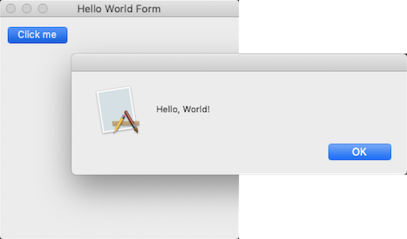

Modern c++17/20 framework to create console, forms (GUI like WinForms) and unit test applications on Windows, macOS, Linux, iOS and android.
Features
- a collection of native C++ classes libraries, to complete std;
- API close to the .net API with a modern C++ approach and full integration with the std standard;
- written in efficient, modern C++17 / C++20 with RAII programming idiom;
- and highly portable and available on many different platforms (Windows, macOS, Linux, iOS and android);
For more information see:
Examples
The classic first application 'Hello World'.
Console
hello_world_console.cpp:
#include <xtd/xtd>
int main() {
}
static console_color background_color()
Gets the background color of the console.
static console_color foreground_color()
Gets the foreground color of the console.
static void write_line()
Writes the current line terminator to the standard output stream using the specified format informati...
The xtd namespace contains all fundamental classes to access Hardware, Os, System,...
Definition: system_report.h:17
CMakeLists.txt:
cmake_minimum_required(VERSION 3.3)
project(hello_world_console)
find_package(
xtd REQUIRED)
add_sources(hello_world_console.cpp)
target_type(CONSOLE_APPLICATION)
Build and run
Open "Command Prompt" or "Terminal". Navigate to the folder that contains the project and type the following:
Output
Forms
hello_world_forms.cpp:
#include <xtd/xtd>
class main_form : public form {
public:
main_form() {
text("Hello world (message_box)");
};
}
private:
};
int main() {
}
CMakeLists.txt:
cmake_minimum_required(VERSION 3.3)
project(hello_world_forms)
find_package(
xtd REQUIRED)
add_sources(hello_world_forms.cpp)
target_type(GUI_APPLICATION)
Build and run
Open "Command Prompt" or "Terminal". Navigate to the folder that contains the project and type the following:
Output
Windows:
macOS:

Linux Gnome:
Unit tests
hello_world_test.cpp:
#include <xtd/xtd>
#include <string>
using namespace std;
namespace unit_tests {
class test_class_(hello_world_test) {
public:
void test_method_(create_string_from_literal) {
string s =
"Hello, World!";
assert::are_equal("Hello, World!", s);
}
void test_method_(create_string_from_chars) {
string s = {
'H',
'e',
'l',
'l',
'o',
',',
' ',
'W',
'o',
'r',
'l',
'd',
'!'};
valid::are_equal(13,
s.size());
string_assert::starts_with("Hello,", s);
string_assert::ends_with(" World!", s);
}
};
}
int main() {
return console_unit_test(argv, argc).run();
}
The tunit namespace contains a unit test library.
Definition: abort_error.h:11
CMakeLists.txt:
cmake_minimum_required(VERSION 3.3)
project(hello_world_test)
find_package(
xtd REQUIRED)
add_sources(hello_world_test.cpp)
target_type(TEST_APPLICATION)
Build and run
Open "Command Prompt" or "Terminal". Navigate to the folder that contains the project and type the following:
Output
Start 2 tests from 1 test case
Run tests:
SUCCEED hello_world_test.create_string_from_literal (0 ms total)
SUCCEED hello_world_test.create_string_from_chars (0 ms total)
Test results:
SUCCEED 2 tests.
End 2 tests from 1 test case ran. (0 ms total)
Getting Started
- Installation provides download and install documentation.
- Portability provides information about C++, libraries dependency, Operating System supported, Compilers and Development Environment tools..
- Examples provides some examples.